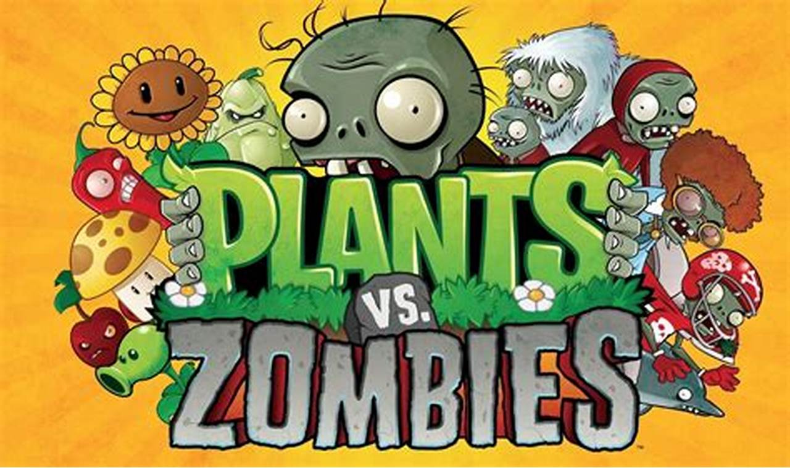

Historia General
Plants vs. Zombies es una saga de videojuegos desarrollada por PopCap Games donde plantas con habilidades especiales defienden su jardín de hordas de zombis. Desde su primer lanzamiento eel 5 de mayo de 2009, la franquicia ha crecido incluyendo juegos móviles, shooters en tercera persona y juegos de cartas.
Plants vs. Zombies
El juego original, lanzado el 5 de mayo de 2009, combina estrategia en tiempo real y tower defense(defensa de torres). Con una jugabilidad simple pero adictiva, se convirtió en un éxito inmediato y marcó el inicio de la saga.
Plants vs. Zombies 2
La secuela llevó a los jugadores a través del tiempo, lanzado el 15 de agosto de 2013, enfrentando zombis en el Antiguo Egipto, los Mares Piratas, etc... Introdujo nuevas plantas, zombis y mecánicas de juego más complejas.
Garden Warfare

Este spin-off cambió la jugabilidad totalmente: un shooter en tercera persona por equipos que se volvió un favorito entre los fans.Lanzado el 25 de febrero de 2014. Plantas y zombis se enfrentan en campos de batalla multijugador llenos de acción.
Garden Warfare 2

Una secuela de Garden Warfare, lanzado el 23 de febrero de 2016 con un enfoque en exploración y personalización, sin perder esas caracteristicas tan especiales del pvzGW1. Actualmente es el que mas jugadores conectados tiene y no solo eso, sino que, expandió la historia y universo PvZ. Aparte de ser mi videojuego favorito de esta saga.
PVZ HEROES
Un juego de cartas coleccionables por turnos donde plantas y zombis luchan en combates estratégicos. Lanzado el 18 de octubre de 2016. PvZ Heroes introduce una amplia variedad de héroes únicos, cada uno con habilidades especiales, tribus especiales y mazos personalizables. Combina lo mejor de la estrategia, humor y estilo clásico de la franquicia en enfrentamientos uno contra uno. Disponible en dispositivos móviles.
Battle for Neighborville

Una evolución mas animada del Garden Warfare, con un enfoque mayor en exploración y personalización. Pero perdieron las variables y el toque carismatico de las 2 entregas posteriores. Lanzado el 4 de septiembre de 2019. Aunque no alcanzó el mismo éxito, expandió la historia y universo PvZ.